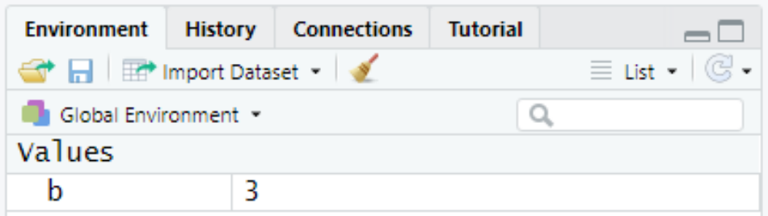

Chapter 5 Eskdale 3 - Set-up
5.0.1 Install programs
If you haven’t installed R and RStudio, please refer to the instructions here before continuing.
5.0.2 Download data
The data for this practical can be downloaded here.
Download the folder, save it to an appropriate location and extract the contents (unzip).
The directory structure is as follows:
- Data
- Practical_1
- Practical_2
- Images
- Practical_1
- Practical_2
- Output
- Practical_1
- Practical_2
All the required data files for Practicals 1 and 2 are stored in the associated sub-directory within Data.
As we move through the practicals, we’ll be creating additional GIS files and we encourage you to save these within the corresponding sub-directory within Output.
Finally, maps and figures will be required for the assessment. These can be exported directly from R and stored in Images.
5.0.3 Initialise an R project
To begin, open RStudio, which should resemble the following:

RStudio interface
RStudio contains the following primary windows:
 Console
Console
Here, code can be typed to produce outputs. For example, typing the following into the console:
1 + 2produces:
## [1] 3Environment
This contains all the variables which have been loaded into the R environment. For example typing the following into the console, which assigns the value of “3” to the variable name “b”:
b <- 3would produce the following in the environment:
